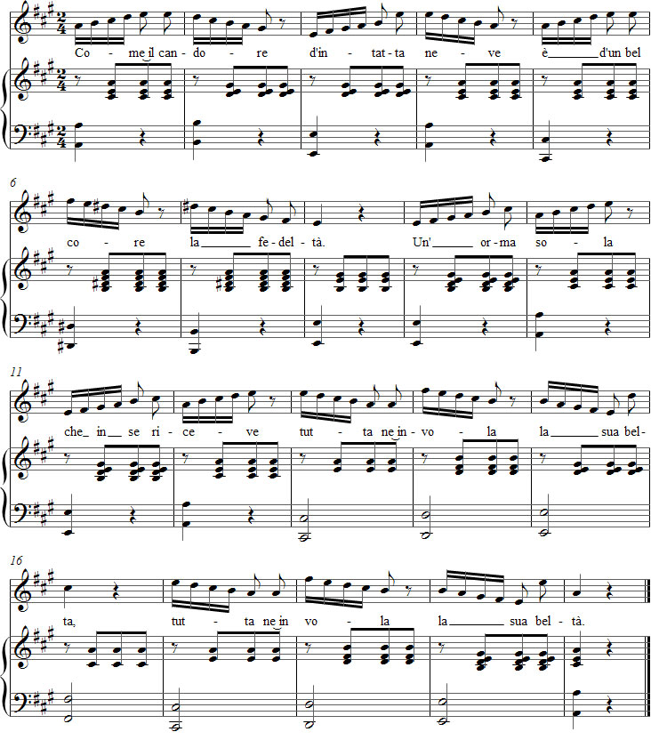

Vaccaj: Tehtävä 7
Kuuntele äänite
Nuotit

Sanat
Introduzione alle volate
Johdatus juoksutuksiin
kuin koskemattoman lumen valkoisuus.
Yksikin jälki, joka sen pinnalle tulee,
rikkoo kokonaan sen kauneuden.
Esitysohjeet
Tässä tehtävässä harjoitellaan viiden sävelen juoksutuksia (volatine) ensin hitaassa tempossa adagio ja taidon kasvaessa nopeammassa tempossa allegro. Juoksutuksia laulussa on yhteensä 17 kappaletta. Exercise 7 on myös esiharjoitus nopeisiin juoksutuksiin (volate), joihin tutustutaan tehtävässä 12. Se, että nämä kaksi harjoitusta ovat niin etäällä toisistaan, voi johtua säveltäjän toiveesta työstää lyhyitä nopeita asteikkoja pitkään ja huolella ennen kuin tartutaan pitkiin asteikkoihin. Koloratuuralla on tässä esittävä tehtävä.
Vaikka harjoitusta on tarkoitus laulaa monessa tempossa, nuottikuvaan sopii parhaiten tempo allegro.
Come il candore on ensimmäinen aariateksti Metodo praticossa, jonka Vaccaj säveltää kokonaisuudessaan. Hän käyttää runon ensimmäisen rivin prosodista kaaviota läpi koko aarian, eikä siis huomioi Metastasion vaihtelevia painotuksia. Tekstivalintaan on voinut vaikuttaa sana candore – vilpittömyys, suoruus. On ajateltu että ns. ”valkoisen äänen” (voce bianca, voix blanche) käyttö auttaa laulamaan nopeasti. (Käsitteet voce bianca ja voix blanche merkitsevät väritöntä, ilmaisussaan kalpeaa, tunteetonta ja kylmää ääntä.)
Ohjeita harjoitteluun
Voit ajatella nuotit aika-arvoiltaan kaksi kertaa hitaammiksi saadaksesi otteen tempo adagiosta.
Harjoittele aluksi tavuilla. Vaihtele säännöllisesti kahta eri tavua esim. vo-vy tai muita samalla tavalla toisiaan foneettisesti lähellä olevia yhdistelmiä kuten vi-ve, vi-vo, ve-vö tai vo-vu.
Harjoittele myös puhtailla vokaaleilla staccato lyhyemmillä äänillä ja kevyemmillä marcato pitemmillä. Vältä kaikkia lisättyjä h-ääniä, eli niin kutsuttuja ”hevoskoloratuureja” (coloratura alla cavalletta). Ajattele mieluummin Hillerin tapaan kahta sidottua ja kahta tuettua kuudestoistaosaa.
Laula välillä puhdasta legatoa pelkillä vokaaleilla. Näin yritetään pitää melodialinja selkeänä. (Epätäsmällinen juoksutus kulkee nimellä coloratura alla sapone eli ”saippuakoloratuuri”.)
Tärkeä välitavoite on asteikkojen laulaminen samalla kertaa sitoen ja muotoillen.
Laula vähitellen laulu Metastasion tekstillä sekä legato että staccato / marcato.
Jatkuva artikulaatiotekniikan työstäminen estää virheellisen ja mekaanisen tavan painottaa jokaisen kuvion ensimmäistä kuudestoistaosaa.
Tee pehmeä, melkein epäselvä hiatus tahdissa 1 (kielitieteessä hiatus tarkoittaa varsinkin antiikin runoudessa kahden eri sanoihin kuuluvan vokaalin esiintymistä peräkkäin ilman elisiota eli sanan loppuvokaalin heittoa seuraavankin sanan alkaessa vokaalilla). Che in tahdissa 11 voidaan jakaa 2 + 2 tai 3 + 1 kuudestoistaosiin. Tässäkään ei pidä tehdä hiatusta.
Ajatuksia tulkinnasta
Keskittyminen erilaisiin artikulaatiotapoihin ei saa ohittaa tekstin sisällön välittämistä kuulijalle. Tässä voi auttaa tahtien 1–8 fraseeraaminen yhteen, samoin tahdit 9–16 (ja 17–20). Kun kullakin tekstirivillä lisäksi tähdätään sen viimeiseen painotettuun tavuun, välittyvät myös d’in, é, la jne. Näin saadaan esiin myös riimiparit candore – core, neve – riceve ja fedeltà – beltà.
Forshufvud, G. 1994. Con lieve fiato. Lärarhandledning till Nicola Vaccajs Metodo pratico. Göteborgs universitetet.